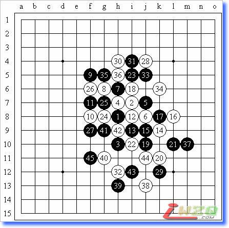
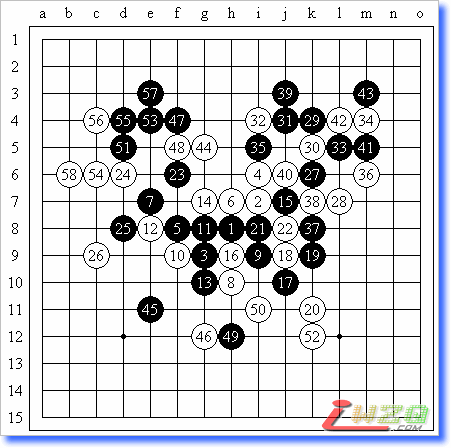
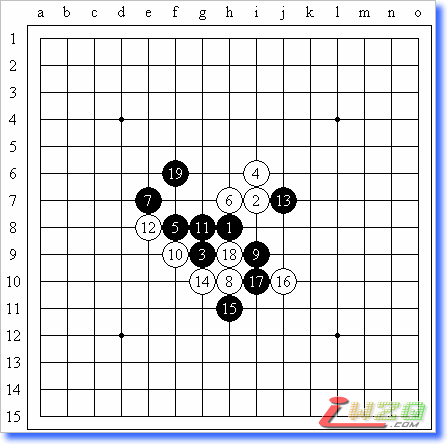
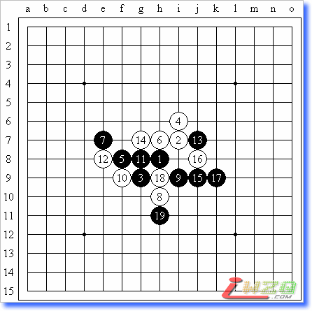
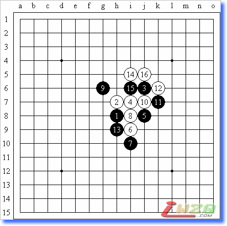
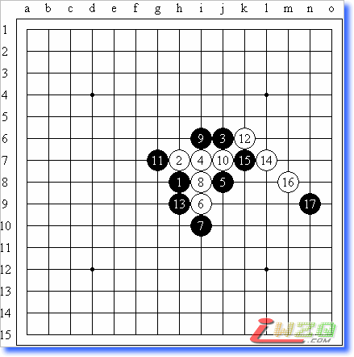
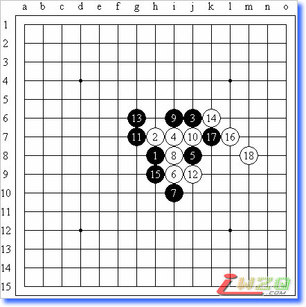

张珵vs李一慢棋赛双方自评棋局
#1 张珵vs李一慢棋赛双方自评棋局 作者：有志青年 发表时间：2008-2-4 21:35:33
2月2日～2月20日张珵吧慢棋赛第1局
明星局（不换），李一（该用户名被屏蔽）黑和张珵（oddgod）（白）

对局者张珵自评文章：
第一次写文章，让大家见笑了。
屏蔽开出明星局，三思之后决定不换（实战时我可不敢这么冒险~）。5给了一打和三打。仁者见仁，智者见智，或许和二打相比，三打更适合他的棋风吧？10求变，谱上说10走I8直接进攻也行，不过当时我对那个变化不是很了解，认为那个应该是攻完几手后再回防，不如走这里实在。11强，因为如果12、14套用原定式。10几乎就没有作用了，而黑棋可以通过11在上边建立攻势。14照猫画虎。16完全是为了使局面更加激烈、复杂而走的棋，有点随手，感觉16走19位更好。17是连接的好棋。我以为对手会27-J4冲四后29-J5，那样黑棋在上面攻势如潮，是不是能杀了？看到他27走下面，我第一感觉就是安全了。但是分析之后发现，此时黑棋在上下都有了不小的优势。如果我28防下面，他可以29-J4、31-J5；如果防上面，他可以29-G11。而且，黑棋还有D7这手上下连接的好棋。所以我走了这个28，希望他能在上边防一手，然后我再回来防下边。实战的29感觉不是最强，因为它交出了黑棋左下的大片空间而将进攻区域转移到了相对比较小的右下，而且不容易和右上连接。H12这个点终于在32这步如愿占到，感觉黑棋左下和右下被分割了。之后双方都没有什么建树，遂和。
对局者屏蔽对此的自评文章：
黑5是以前的选点，现在流行黑13的位置，可能黑棋更好走一些。白6、黑7、白8定式招法，黑9也可以选择白12的位置，现在黑9的下法空间更为开阔！白10采取防守的形式，效率很高，黑11思考之后放弃了黑25的位置，选择了更有发展潜力的实战招法。白12～黑15希望走回原定式，但白16不好！按照原定式占据黑25的位置更是无理，应该考虑更加稳妥的方式，黑17正常对应，同时做出两个活二，是好棋，如果白18应对在l7位的话，分析表明只能增加黑棋下面的优势。白18防守。黑19看似凶猛实际上不好！无论白棋是否冲四，黑棋在下面都有所应对，但因为空间问题无法取胜。如果能占据l7要点，则黑棋将有取胜的机会，白棋在下面也没有强烈的反击。进攻方向的错误选择消灭了黑棋的优势。黑21只好交换。黑23感觉不错，白24防守，至黑27，并不指望在上方直接取胜，而是在上下两方面都保有一定的优势，如果黑27反向防守，黑棋获得取胜的机会也是有可能的。白28防守，黑29看似是防守，实际隐含着进攻，白棋上面有一点先手，一旦失去这个先手，黑棋占据j12位则黑胜！这一手其实连接了下面黑棋的所有优势。此际引诱白棋强攻，但没想到白棋会在实战白30的位置进攻！黑31依然不是最强，或许直接在k4盖更好，依然希望白棋能够进攻，至少在上方留下一个小先手。但白32分寸把握得非常好，封杀了黑棋的进攻连接要点！白34方向正确，防止黑棋上下联系。黑37是强烈的一手，但白38是绝妙的防守！多次分析之后黑棋在角落根本无法取胜！之后双方交换频繁，黑45之后白棋有先手，黑棋再也不可能取得好的机会取胜，双方只得握手言和。
#2 2007年7月9日～2008年1月30日，张珵吧慢棋赛第2局 作者：有志青年 发表时间：2008-2-4 21:36:50
2007年7月9日～2008年1月30日，张珵吧慢棋赛第2局
斜月局（不换），张珵（oddgod）（黑）负李一（该用户名被屏蔽）（白）

对局者张珵自评文章：
首先请看对局时间，这是历时半年多（205天）的一盘精彩对局。中间隔了N多重大事件：我的军训、京沪对抗赛、世锦赛、全少赛、屏蔽的军训、全锦赛、高校赛、新春杯等……
言归正传，斜月开局，屏蔽没交换，并且给出了立二的防守，着实出乎我的意料。以下按照定式走，白10变招！以前从来没见过这个10，看到这个10的第一感觉是，白棋大意了，走错次序了。但是深入研究后发现，不是那么简单，原来是白棋早有预谋啊……于是，这之后，我频频长考，结果还是没有走出正解，汗（正解在后面有讲解）。13走错之后，感觉局面仍然是黑优，但屏蔽防守得实在太强了，而且韧性十足。26方向正确，分割黑棋上下的势力。27企图通过右上角联系全盘，28是这种局部的最强防守。之后黑棋在上面挣扎未果，44这样一盖，白棋在上面有了很强的势力，必须回防才行。51似防实攻，为53做V以及后面的进攻埋下伏笔。52是看透全盘的点睛之笔，相信屏蔽已经看出来了，黑棋在左上角能做V，并且有后续手段，但就是没有杀，而在右下角又防不住——俨然白必胜了。这让我想起了《棋魂》中越智说的一句话：“如果他能计算100步，我就能计算101步；如果他能计算1000步，我就能计算1001步！”之后我又挣扎了几步。57做两套V，58双防，一剑封喉！黑投子。

这是李洪斌教室给出的正解：13单挡。

如果14走这里，就还原了。
对局者屏蔽对此局的自评文章：
这个白4的变化相信大家都见过了，大家可以看看oddgod的棋评，里面有简单的分析，至黑9都是正常，我也不会无聊到在慢棋赛里按照定式往下走，嗯……白10是预定的一手！其实下慢棋的时候我并不知道这个白10的正确解法，大家可以参看oddgod的棋评。这里黑13的选点很重要，我主要评述一下实战就好：相信大家也能看出来黑13的位置对白棋而言很不错，但这种优势只是暂时的、虚假的，锻炼判断优势究竟是否存在的能力正是下棋的难点之一。实战黑13交换后，应该说取胜的可能性暂时缩小了。白16的选择很有趣，并没有直接防在作杀点，这是为了控制横9线和11－16斜线上黑棋势力的发展，毕竟横8线黑棋的眠三不可能再发挥太大的作用，让让也无妨，因此面对黑17，白18也是预定的手段，如果18－22，19－19的力量就强了，这手18后黑21的交换也就必然了。行棋至黑27，白棋左侧接近盘端不好发展，中间难以突破，右下势力不足，此时选择继续防守的策略虽然符合我的风格，但其实也是很无奈的，说起来，白28的选点是我一时冲动所致……（-_-|||）但后来证明这手棋还是可以的，28－33或许也不错。黑29好拓展！注意纵k线上出现长连筋。很多有禁规则的初学者都认识到长连禁手很难解，因此不愿意将自己的棋子按照6格来布置（甚至执白时也一样，认为这样的形状进攻效率不高），其实这是一种误解，对局时应当根据盘面的形势而不是固有的棋理来选择招法，哪里有效哪里就最好。在这一局中，如果我执着于禁手对黑棋的限制（或者出于抓禁手的冲动）而选择30－33的防守的话，黑棋立刻31－50，33－30，35－31双杀！实战白30后，黑31的进攻也是很强势的，但幸好白32后黑棋无胜。以下至白38防守，黑39强攻，白40，黑41？我认为此招不妥，或许41－m7交换后的变化会更好？42、43交换后确认右上局部无胜，44再行防守时，感觉右下方白棋伺机进攻的空间大了不少，左上白棋是先手交换，黑49若直接在51位防守，下方白棋虽有空间却无足够材料，取胜还需仔细做棋，但实战行至黑51，虽有53位作杀，但白54位防守强劲，黑棋局部无胜，白52才可放心大胆地落下，形成必胜形状。
#3 Re:张珵vs李一慢棋赛双方自评棋局 作者：有志青年 发表时间：2008-2-17 16:08:45
2008年2月8日～2008年2月14日，张珵吧慢棋赛第3局
疏星局（不换），5A＝g7，李一（该用户名被屏蔽）（黑）负张珵（oddgod）（白）

李一自评如下：
这局还真是短小精悍呢……现在证明这个黑7是必败了——白8就是唯一的正解。我在走完黑7之后才看到白16之后的手段的，少想了一步，呵呵……这个黑9也算强防吧？9－15是另一个比较强的防守，解法在另一篇棋评里面写得很详细了，在此略过不表……其实我一直认为这个白6是最强的手段，嗯……特别是7－15、8－8的应对，我觉得白棋很不错的样子。以前的6－8，也还可以的。顺带一提：6－15，7－6，黑必胜。
张珵自评如下：
一盘短小的对局，貌似现在6－8比较流行，但那个后面有一大串定式，和棋的可能性比较大。我觉得这个6也是可以一战的，就我个人的棋风而言，我也更偏向于这个6。转折点出现在第7手，此时的第一感觉就应该是这个8吧。但我没有急着落子，而是开始研究后续手段，后来我看到了这个局面：

发现白不好攻了。直到开始长考后的第三天，我才发现下面这个进攻套路——稍微调整了一下手顺后，白必胜了。
